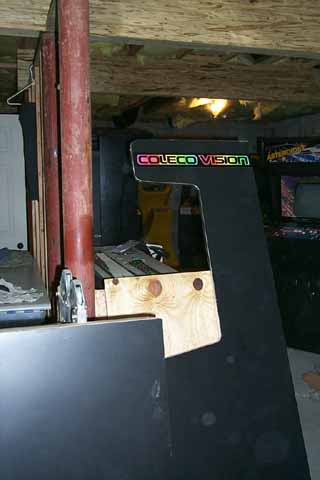

The underside of the plywood will look like this once you screw in both pieces of 3/4" plywood to act as the mounting ledges for the joystick base. Put the joystick into place. Mount it permanently to the 3/4" plywood underneath each of its sides. On the backs of the joysticks is a retaining ring, using a flat screw driver gently remove it and the centering collar and place them off to the side. Slide the joystick out from the base, repeat on the other side.
We will be mounting laminate
over the whole plywood sheet so you'll need the stalk from the joystick
out of the base for a flush surface, this is also why the fire buttons
are not secured until later. Now onto the pedestal.
Back to the tablesaw for some more 10 degree cuts for the 2 side pieces
and cutting the front piece to proper height with a 10 degree cut on one
side. First I need a break from all the wood work.
The doorbell rang earlier and the graphics I ordered just arrived, so I
decided to mount the side panel graphics. I used
some images supplied to me by a friend and then cleaning them up and sharpening
the edges I created some Adobe Encapsulated Post Script (.EPS) format files
(ranging from 5mb to 30mb) and sent them to a graphics design house for
professional quality decals to be made. You can go any route
you want from doing these on an inkjet printer to Kinko's (waaaaayyyy tooo
expensive from them and quality is not what I was shooting for) to a graphics
company. I choose the later since I wanted this done properly.
Still waiting for the custom acrylic header to arrive and also the huge
package with classic gaming posters I had made up too.... okay
back to work!

The pedestal.... the side pieces are cut and checked for fit. Now using a 1/8" drill bit, drill into the sides for some screws. Do this step! The wood is a lot smaller and could split if you run a screw straight into the wood without a guide hole to go into. Dab some glue onto the connecting sides and screw them together.